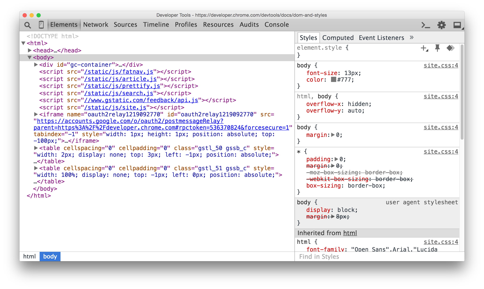
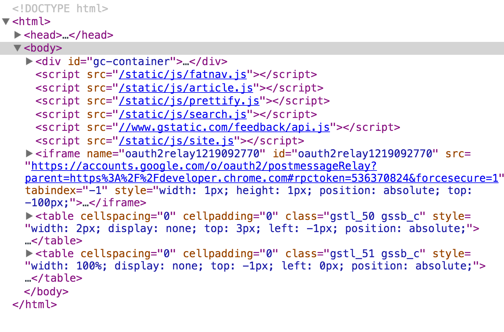
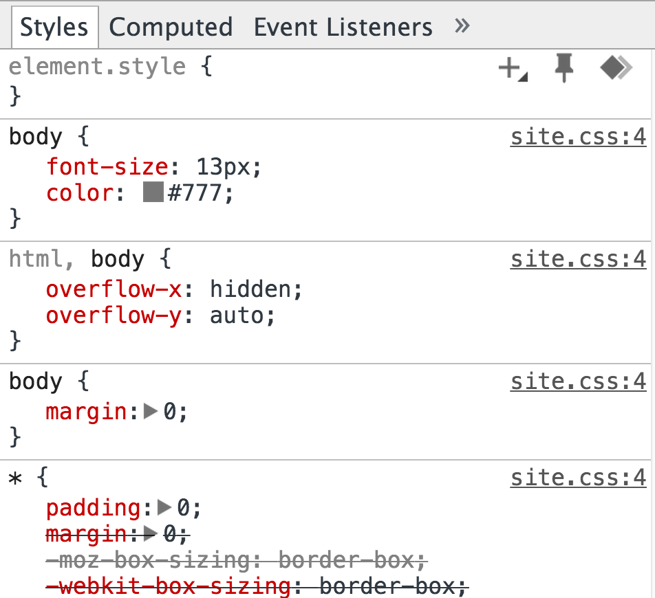
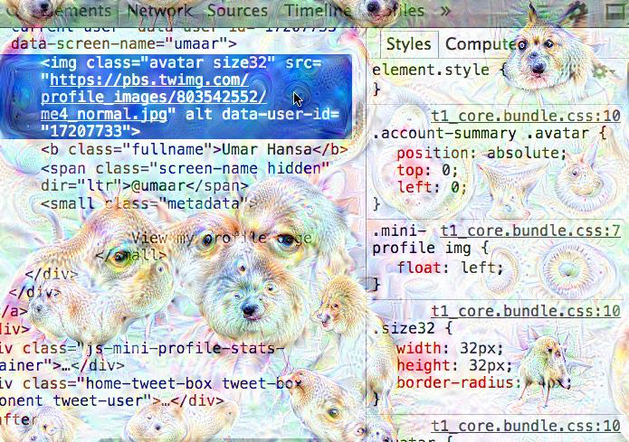

DevTools
An animated journey
Created by Umar Hansa / @umaar
To you for being here (especially at a multi-track conf)
To the organisers for putting together this conferenceAbout me
And some stuff I've done
Talks

Dev Tips
A developer tip, in the form of a gif, in your inbox each week
umaar.com/dev-tipsWhy subscribe?
- It's free
- You can normally grasp enough through the gif alone
- Keep up to date with DevTools
- Occasional screencast videos
What's in this talk?
- An introductory look at a few Chrome DevTools panels
- Brand new features
- Recap
Elements Panel
DOM Tree


Inspect Element
Edit the DOM
- Content
- HTML Tags
- Attributes
- Attribute values
Styles Pane
View and edit CSS

DOM Breakpoints
Debugging from the outside in
View element event listeners
DevTools now supports jQuery natively
In Canary
Network Panel
Record + Details View
Searching + Filtering
Sources Panel
Snippets
Source Editing + Local modifications
Workspaces
This stuff is not perfect.
yet

Live Edit JS
Live Edit
- Raw text changes are injected back into V8
- Comparisons are made between new.js and old.js
- V8 compiles the changed JS and patches old.js with the changes
Timeline Panel
Timeline recording + paint profiler
Paint rectangles
Audits Panel
Try PageSpeed Insights and WebPageTest for now
What's new in Chrome DevTools
And just some lesser known features
- Warning -
Some features are experimental
Experimental features can change, vanish, or breakTimeline Panel
Costly Functions
Security Panel
Audits Panel
Thanks to Accessibility Developer Tools
Accessibility Audit
Misc
Promise Inspector
Network Panel
Filmstrip
Custom Throttling Profiles
Elements Panel
DOM Toolbar + Layout Editor
Colour picker + Colour palettes
Easing previews
Cubic bezier editor
Animation Inspector
Recap
Get to know your browser developer tools
Invest the time + effort to become familiar with the IDE-style features
E.g. WorkspacesYou'll mess up a few times before it starts working

Using a compiler for your CSS?
A transpiler for your JS?
Try Source Maps
Finishing Up
Encourage your team to adopt DevTools workflows
Product Manager
Network Filmstrip: Compare your site against competitors
Tester
DevTools can generate CSS selectors for your automated browser tests
DevOps
Network recording to check page weight + large asset resources
Check caching on resource response headers
Designer
Layout Editor
Experiment with generated colour palettes to find what else works
DevTools Deep Dream
Can I help?
- Workshops
- Training
- Dev Tips issue tracker
@umaar on twitter
umaar.com/dev-tips or search for "umar dev tips"

Bye!